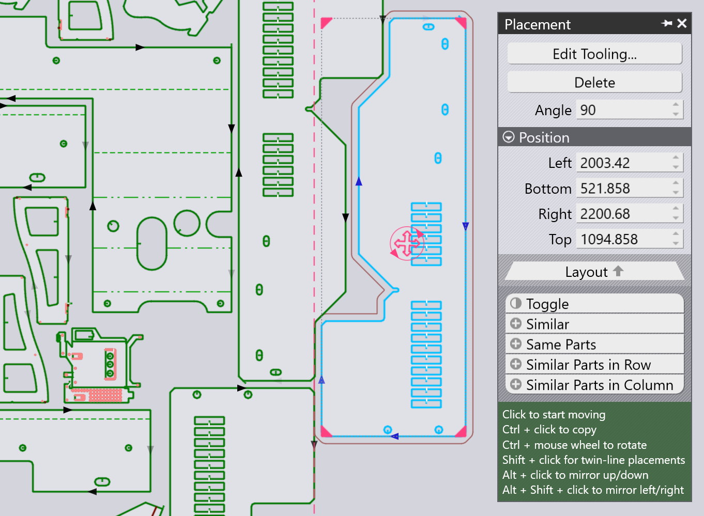
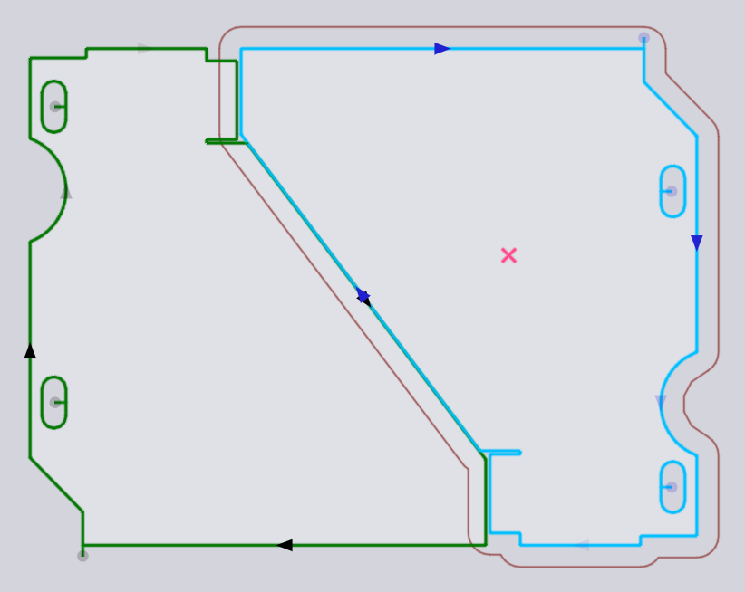
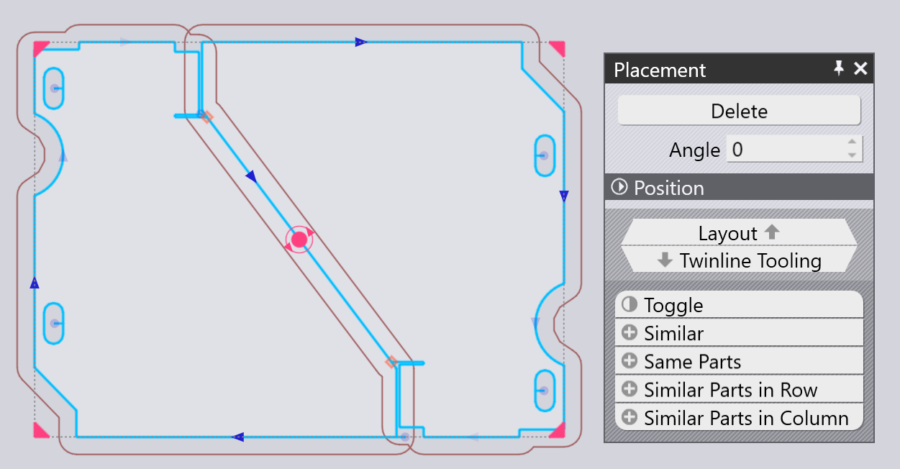
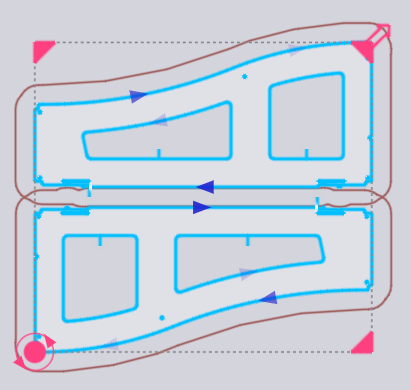
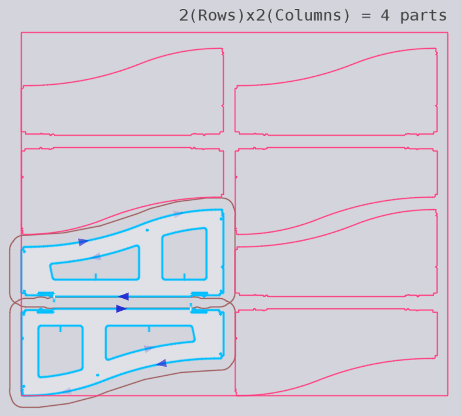
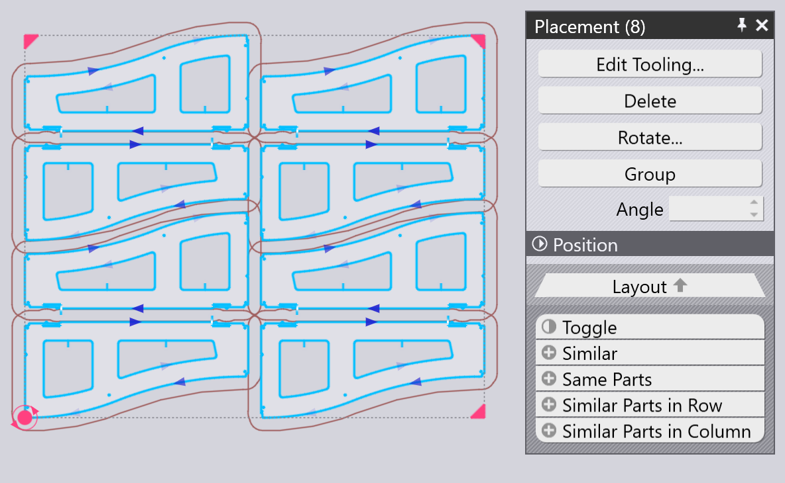
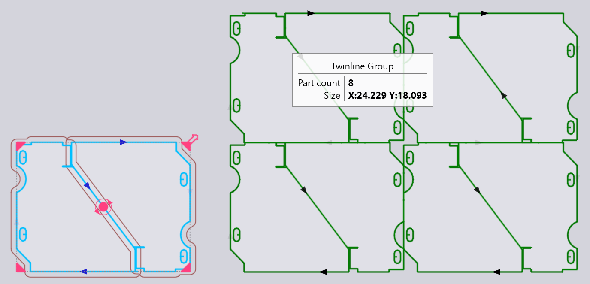
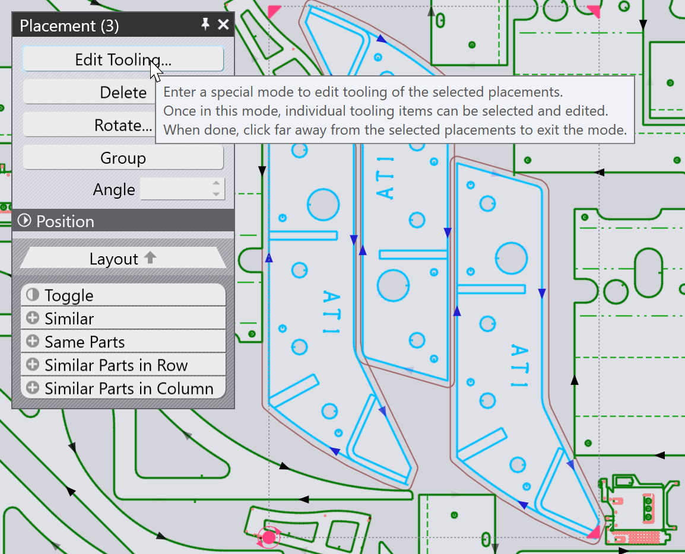
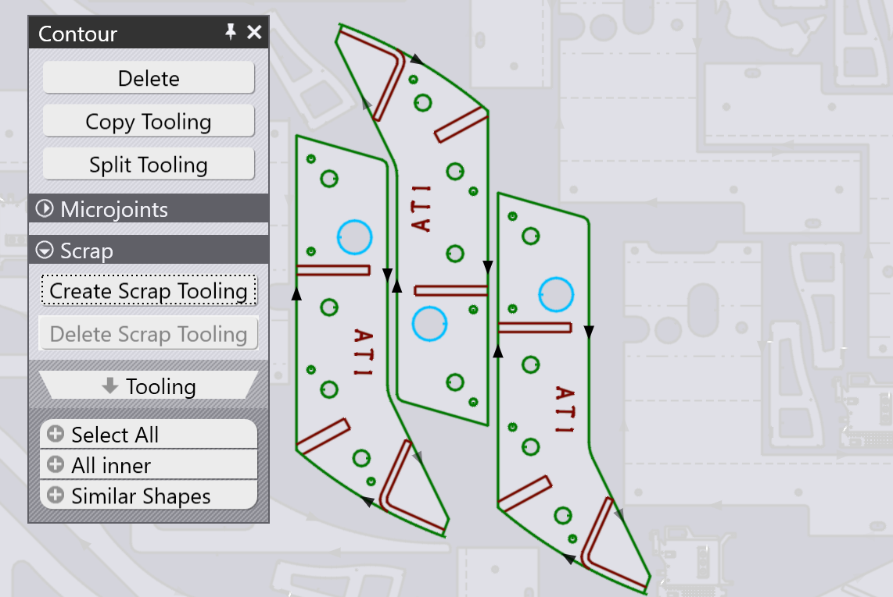
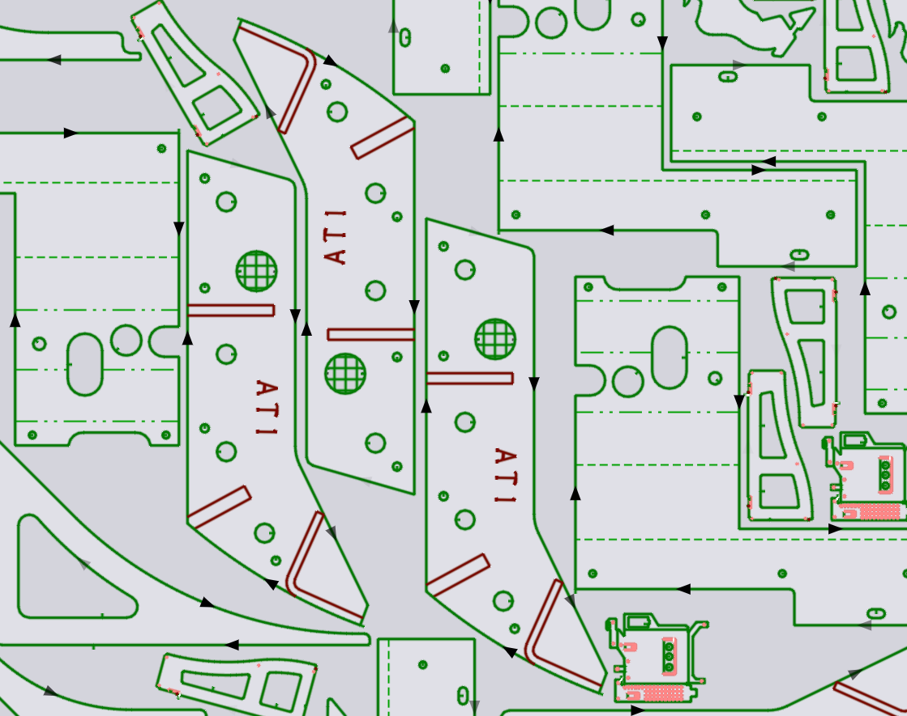

Panel Umístění
Přidaný díl (nebo jakýkoli díl na rozvržení) lze přesunout, otočit nebo zopakovat pomocí panelu Umístění, který se zobrazí po kliknutí na díl:

-
Nastavení Left, Bottom, Right a Top nastavení představují hranice ohraničujícího rámečku dílu a lze je použít k přesnému umístění dílu.
-
Můžete také kliknout na červený kruhový úchyt uprostřed dílu a začít jej přetahovat na požadované místo na plechu. Při přetahování dílu TecZone Laser zobrazí vodicí čáry, které vám pomohou umístit díl s přesnou mezerou (šířkou můstku) k sousedním dílům. Při umisťování dílu se kolem něj nakreslí obrys, který je posunut od skutečné kontury dílu o šířku můstku.
-
Nastavení Angle lze použít k otočení dílu, aby bylo možné vyzkoušet jiné orientace. Při přetahování dílu pomocí jeho přetahovacího úchytu můžete také podržet klávesu Ctrl a otáčet kolečkem myši, abyste díl interaktivně otočili.
-
Pomocí Ctrl+kliknutí vytvořte kopii dílu a poté začněte tuto kopii přetahovat.
-
Pomocí Alt+kliknutí zrcadlete díl svisle a Alt+Shift+kliknutí zrcadlete díl vodorovně.
-
Ve spodní části tohoto panelu se nachází několik voličů:
-
Kliknutím na Přepnout zrušte výběr vybraných dílů a vyberte vše ostatní.
-
Kliknutím na Similar vyberte všechny kopie stejného dílu ve stejném úhlu.
-
Kliknutím na Same Parts vyberte všechny kopie stejného dílu (bez ohledu na úhel otočení).
-
Kliknutím na Similar Parts in Row vyberte všechny díly ve stejném úhlu a ve stejné vodorovné poloze.
-
Kliknutím na Similar Parts in Column vyberte všechny díly ve stejném úhlu a ve stejné svislé poloze.
-
Umístění TwinLine (společná čára)
Použitím Shift+kliknutí k zahájení přetahování dílu se umístění přepne do režimu twinline – když přetáhnete dvě paralelní hrany blízko k sobě, TecZone Laser je spojí přesně v jedné vzdálenosti šířky řezu, takže mohou být obě řezány jako společná čára. Zde je příklad takového spojení, které vznikne, když táhneme díl pomocí Shift+kliknutí:

Po uvolnění tlačítka myši vytvoří obě díly jednu skupinu se dvěma čarami, kde je společná čára rozříznuta pouze jednou (vidíte, že je zde pouze jedna šipka řezu na diagonální čáře uprostřed).

Opakování a seskupování dílů

Můžete vybrat díl a poté pomocí čtyř úchytů v rozích ohraničujícího rámečku díl zopakovat. To lze provést i u skupiny vybraných dílů. Zde je příklad, kdy začneme s dvěma sousedními díly vybranými a klikneme na rohový úchyt, abychom jej začali táhnout ven:

Když máte požadovaný počet řádků a sloupců, můžete kliknutím vložit opakující se díly:

Opakování s TwinLine
Pokud začnete s jediným dílem nebo dvojitou jednotkou složenou z více dílů, můžete podržet Shift při tažení rohu a provést opakování twin-line:

Seskupování
Kdykoli máte vybraných více dílů, můžete kliknout na tlačítko Group, abyste je seskupili dohromady jako jednotku. Poté budou všechny operace, jako je přesun, otočení, zrcadlení a opakování, fungovat na této Group. Po výběru skupiny můžete kliknout na Ungroup pro rozložení této skupiny a zacházet s nimi opět jako s jednotlivými díly.
Úprava nastrojení dílu
Tlačítko Edit Tooling panelu Umístění lze použít k úpravě laserového řezání jednoho nebo více vybraných dílů přímo v kontextu rozvržení. Nejprve vyberte skupinu podobných dílů, pro které chcete upravit nastrojení:

Všechny ostatní díly jsou zašedlé, vybrané díly TecZone Laser zvětší a vy můžete upravit nastrojení daného dílu. V tomto příkladu předpokládejme, že chceme přidat operaci Scrap cutting na jeden z kruhových otvorů, aby se ten výstřižek rozřezal:

Pokud provedete úpravu (například přidání řezání šrotu), uvidíte, že se úprava aplikuje na všechny vybrané díly. Kliknutím mimo skupinu upravovaných dílů se obnoví celé rozvržení. Můžete vidět, že ke třem vybraným dílům bylo přidáno nástrojové vybavení pro řezání šrotu.
